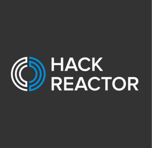

Hack Reactor
Founded in 2012, Hack Reactor is a 12-week immersive coding school providing software engineering education, career placement services, and a lifelong network of professional peers. Hack Reactor has campuses in San Francisco, Austin, Los Angeles, and New York City, as well as an online, remote immersive (full-time and part-time). After 800+ hours of curriculum, students graduate as full-stack software engineers and JavaScript programmers. During the first six weeks at Hack Reactor, students learn the fundamentals of development and JavaScript, and are introduced to developer tools and technologies. In the final six weeks, students work on both personal and group projects. Job preparation is integrated into the curriculum, and students will build an online presence, resume and LinkedIn profile by graduation. Hack Reactor's immersive program is known for its exceptional quality and for demanding a starting skill set beyond that of a beginner. In 2017 Hack Reactor introduced a variety of prep programs to help beginners ramp up their skills to the level required for its immersive program. The most popular prep program is Live-Guided (also called SSP) and is currently offered in 4-week, 5-week and 7-week modules to accommodate a variety of schedules. A self-guided program is also available for free or with premium features for paying students. Hack Reactor places alumni in mid-to-senior level positions at companies in tech, including Google, Salesforce & Microsoft, with an average graduate salary of $105K (2017 San Francisco student outcomes survey; 81% survey response rate).
.png)
.png)